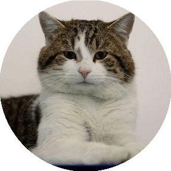
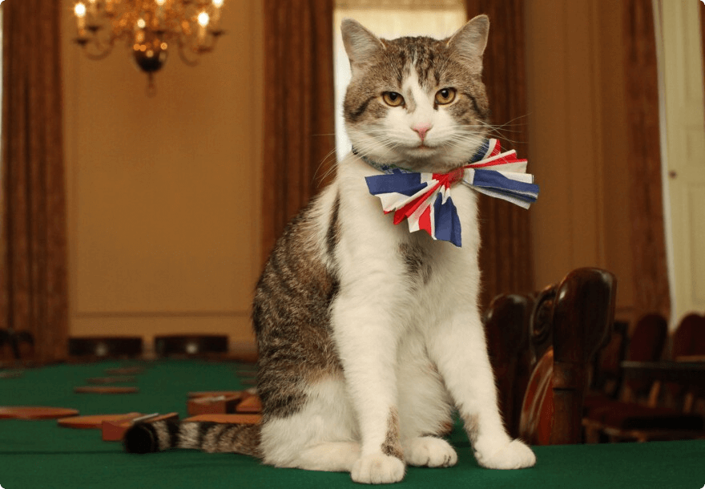

Привет!
Это страница кота Ларри
Ларри живет на Даунинг-стрит с 15 февраля 2011 года и стал первым котом получившим официальный титул главного мышелова.
Аккаунт в Twitter — это аккаунт кота Ларри.

Интересные факты из жизни кота Ларри:
- Ларри попал на Даунинг-стрит из лондонского приюта для животных «Баттерси» (Battersea Dogs and Cats Home).
- 16 сентября 2012 года премьер-министр Великобритании решил отказаться от услуг Ларри в качестве главного мышелова.
По сообщениям прессы Ларри ненадлежащим образом исполнял свои обязанности.
- В октябре 2012 года на приюте «Баттерси» появилась почётная «Синяя табличка» в честь Ларри.
- В апреле 2016 года у Ларри появился конкурент в здании МИД Великобритании на Кинг-Чарльз-стрит - «новый сотрудник дипломатической службы Её Величества» кот Палмерстон.
- 14 июля 2016 года газета Daily Mail сообщила, что кот Ларри и кот Палмерстон (официальный мышелов из британского МИД) решили «выяснить отношения» на Даунинг-стрит в Лондоне.
Познакомьтесь поближе с этим пушистым обитателем Даунинг-стрит 10. Портретная галерея
